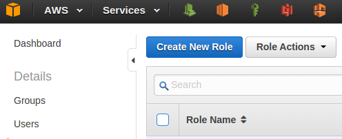
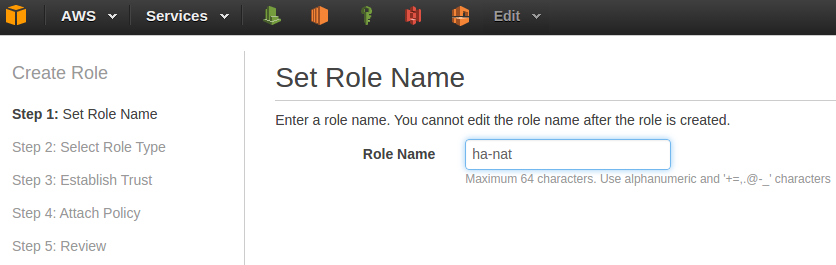
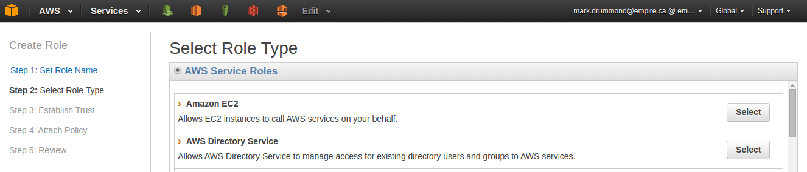
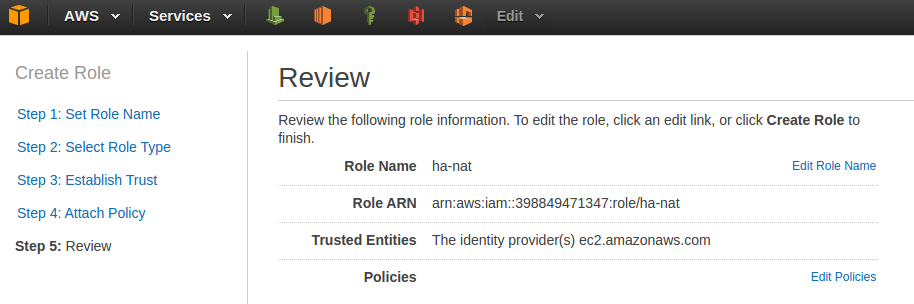
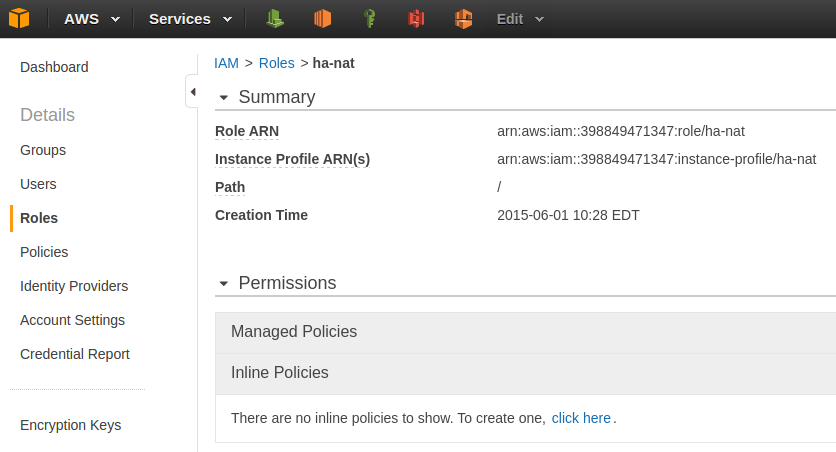
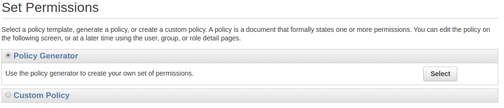
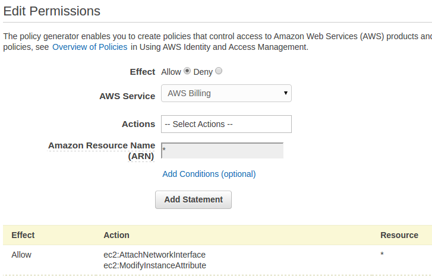
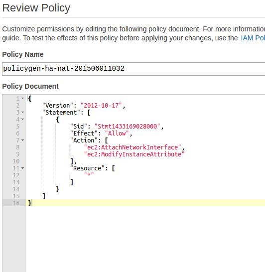

Highly Available NAT with AWS Auto Scaling
Posted on Fri 22 May 2015 in Amazon Web Services
[AWS now offers a highly available NAT Gateway service. You can still run your own NAT, and there are advantages and disadvantages to both options. I’ve converted my systems to use the NAT Gateway service. This document is a work-in-progress.]
This is largely a re-spin of Cake Solutions’ methodology documented on their blog. I needed a practical exercise for working with AWS Auto Scaling. Cake Solutions’ methodology fit the bill and I got a highly available NAT service for my AWS VPC environments for my, and their (mostly their), efforts.
Highly available in this context means Auto Scaling will replace my running NAT instance if there are any problems with that instance. There is a short outage while the instance is replaced.
This is written from the perspective of Linux instances.
Overview
In order for an EC2 instance to initiate connections out to the Internet, it must either have a public IP address assigned to it, or have access to a NAT instance that has a public IP address itself. Since instances on private subnets do not have public IP addresses, they must use a NAT instance. Probably the most common use-case here is for instances on private subnets to be able to query their appropriate software repositories to download and update their software.
The NAT server instance solves this problem by offering instances on private subnets proxy access to the Internet. This is implemented by setting the default route for your private subnets to point to the NAT instance, rather than pointing to the VPC’s internet gateway as the public subnets do.
If your NAT instance is replaced for any reason, the routing table for your private subnets will need to be updated to point to the replacement NAT instance. The solution documented here automates the process by pointing the private subnet route table default gateway at a discrete Elastic IP. That EIP is moved from one NAT server instance to the next, automatically during the instance creation process. This obviates the need to touch the route table, and is fully automated using Auto Scaling. In short:
- Auto Scaling sees there is no NAT instance, or the NAT instance is no longer in a healthy state.
- Auto Scaling terminates any existing NAT server instance and creates a new instance.
- Commands in the instance user data attaches the discrete EIP to the new instance.
- Private subnet traffic now flows through the new NAT instance.
IAM Role
As you will see below, when a replacement NAT instance is brought online, the new instance runs a script (“User Data“). One of the functions of that script is to attach the discrete EIP to the instance. The NAT instance requires appropriate permissions before it is allowed to make changes to the EIP. We use an AWS IAM role to provision the necessary permissions.
In the AWS console, go to Services -> IAM, click “Roles” and then click “Create New Role”.

Give the role an appropriate name and click “Next Step”.

At Step 2, select the “Amazon EC2” service role and then click “Next Step”.

Review and click “Create Role”.

Now select the new role, expand the “Inline Policies” section and click the “click here” text to create an inline policy.

By default the Policy Generator should be selected. Click the “Select” button.

Change the AWS Service to “Amazon EC2” and in the Actions drop down, select “AttachNetworkInterface” and “ModifyInstanceAttribute”. In the ARN text box, just enter “*”. Click “Add Statement” and then click “Next Step”.

Click Apply Policy.

The policy should look like this:
{
"Version": "2012-10-17",
"Statement": [
{
"Sid": "Stmt1431450055000",
"Effect": "Allow",
"Action": [
"ec2:AttachNetworkInterface",
"ec2:ModifyInstanceAttribute"
],
"Resource": [
"*"
]
}
]
}
Elastic IP
We will create a new EIP, distinct from any one instance. This EIP will be attached to the current active NAT instance, and moved from one instance to the next as needed. As mentioned, as each new NAT instance comes online, its user data script actually “grabs” the discrete EIP.
User Data
AWS allows you to customize new instances with “User Data”. User data can be specified in a number of ways, including passing a shell script to the instance. The user data is executed towards the end of the instance creation cycle. The user data we will use instructs a new instance to attach the Elastic IP to it itself, to disable source-destination checks, and to ensure forwarding is enabled on the instance.
1 2 3 4 5 6 7 8 9 10 11 12 13 14 15 16 17 18 19 20 21 22 | #!/bin/bash
function log () {
echo "$(date +"%b %e %T") $@"
logger -- $(basename $0)" - $@"
}
export AWS_DEFAULT_REGION="us-east-1"
instance_id=$(curl -s http://169.254.169.254/latest/meta-data/instance-id)
eni_id="eni-fd054db5"
/usr/bin/aws ec2 modify-instance-attribute --instance-id ${instance_id} --no-source-dest-check
/usr/bin/aws ec2 attach-network-interface --instance-id ${instance_id} --network-interface-id ${eni_id} --device-index 1
retcode=$?
[ "$retcode" -eq 0 ] && { log "eni attachment successful" ; } || { log "eni attachment failed" ; exit 1 ; }
sleep 60
ifdown eth0
iptables -t nat -A POSTROUTING -j MASQUERADE
iptables -A FORWARD -j ACCEPT
echo 1 > /proc/sys/net/ipv4/ip_forward
|
Security Group
You will need an appropriate security group. It should allow HTTP and HTTPS from your private subnets or your entire VPC.
Launch Configuration
ami-303b1458
We use the launch configuration to define the characteristics of the EC2 instances that Auto Scaling will launch. We specify the Amazon Machine Image to use, the instance type, user data, etc. Essentially all the same information you would specify if you were manually launching a EC2 instance.
Amazon provides ready-made NAt server instances, based on Amazon Linux, and that is what we use here. No matter your preference for OS, the Amazon Linux based NAT instances are essentially appliances. Specifically, and at the time of this writing, I am using the AMI ami-303b1458, the latest availbel Amazon Linux NAT AMI in the US East region.
I’ve specific t2.micro instance type and my NAT security group.
I’ve included my above user data shell script.
Auto Scaling Group
The Auto Scaling group ties everything together.